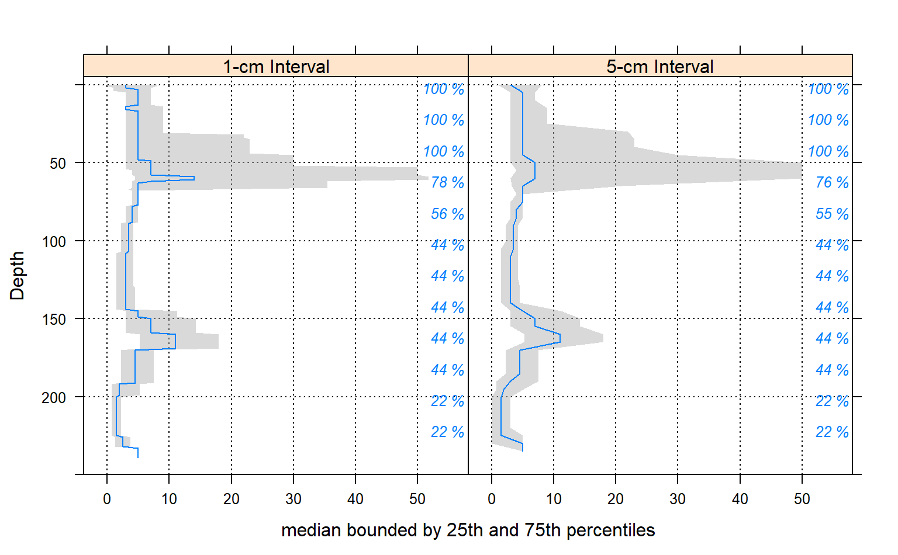
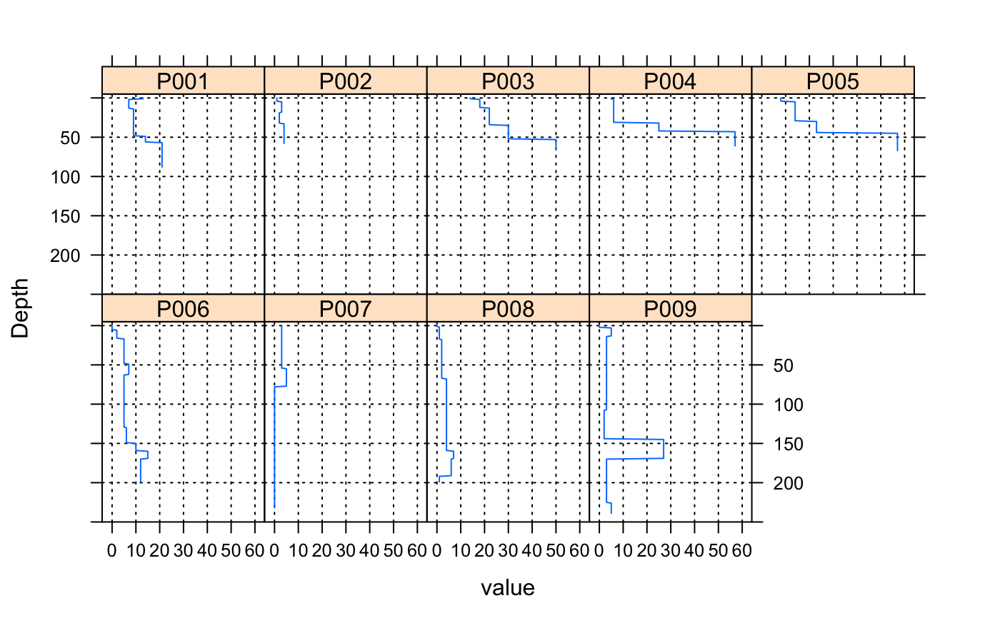
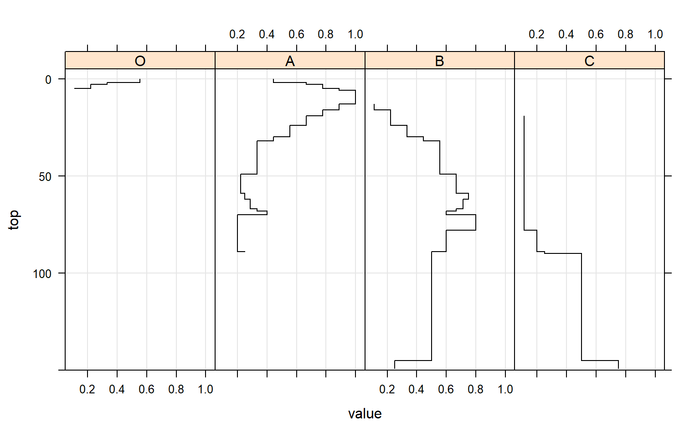
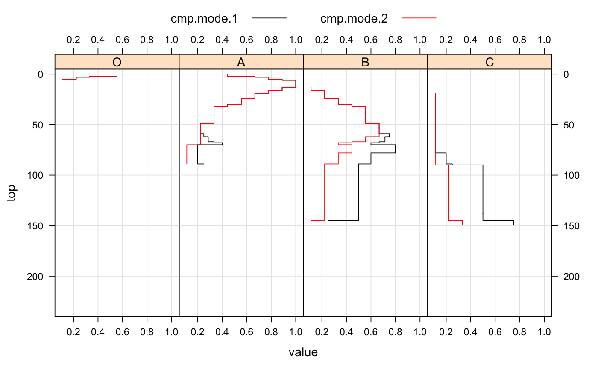
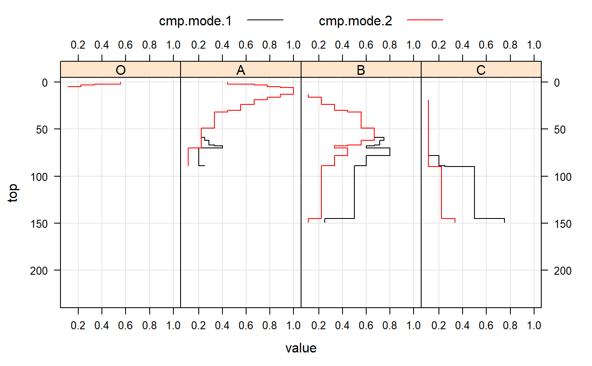

SPC-slab-methods.RdAggregate soil properties along user-defined `slabs`, and optionally within groups.
# method for SoilProfileCollection objects slab(object, fm, slab.structure=1, strict=FALSE, slab.fun=.slab.fun.numeric.default, cpm=1, weights=NULL, ...)
| object | a SoilProfileCollection |
|---|---|
| fm | A formula: either `groups ~ var1 + var2 + var3' where named variables are aggregated within `groups' OR where named variables are aggregated across the entire collection ` ~ var1 + var2 + var3'. If `groups` is a factor it must not contain NA. |
| slab.structure | A user-defined slab thickness (defined by an integer), or user-defined structure (numeric vector). See details below. |
| strict | logical: should horizons be strictly checked for self-consistency? |
| slab.fun | Function used to process each 'slab' of data, ideally returning a vector with names attribute. Defaults to a wrapper function around |
| cpm | Strategy for normalizing slice-wise probabilities, dividing by either: number of profiles with data at the current slice (cpm=1), or by the number of profiles in the collection (cpm=2). Mode 1 values will always sum to the contributing fraction, while mode 2 values will always sum to 1. |
| weights | Column name containing weights. NOT YET IMPLEMENTED |
| … | further arguments passsed to |
Typical usage, where input is a SoilProfileCollection.
Multiple continuous variables OR a single categorical (factor) variable can be aggregated within a call to slab. Basic error checking is performed to make sure that top and bottom horizon boundaries make sense. User-defined aggregate functions (slab.fun) should return a named vector of results. A new, named column will appear in the results of slab for every named element of a vector returned by slab.fun. See examples below for a simple example of a slab function that computes mean, mean-1SD and mean+1SD. The default slab function wraps stats::quantile from the Hmisc package, which requires at least 2 observations per chunk. Note that if `group` is a factor it must not contain NAs.
Somtimes slab is used to conveniently re-arrange data vs. aggregate. This is performed by specifying identity in slab.fun. See examples beflow for a demonstration of this functionality.
The default slab.fun was changed 2019-10-30 from a wrapper around Hmisc::hdquantile to a wrapper around stats::quantile. See examples below for a simple way to switch to the HD quantile estimator.
Execution time scales linearly (slower) with the total number of profiles in object, and exponentially (faster) as the number of profiles / group is increased. slab and slice are much faster and require less memory if input data are either numeric or character.
There are several possible ways to define slabs, using slab.structure:
e.g. 10: data are aggregated over a regular sequence of 10-unit thickness slabs
e.g. c(50, 60): data are aggregated over depths spanning 50--60 units
e.g. c(0, 5, 10, 50, 100): data are aggregated over the depths spanning 0--5, 5--10, 10--50, 50--100 units
Output is returned in long format, such that slice-wise aggregates are returned once for each combination of grouping level (optional), variable described in the fm argument, and depth-wise 'slab'.
Aggregation of numeric variables, using the default slab function:
The names of variables included in the call to slab.
The name of the grouping variable when provided, otherwise a fake grouping variable named 'all.profiles'.
The slice-wise 5th percentile.
The slice-wise 25th percentile
The slice-wise 50th percentile (median)
The slice-wise 75th percentile
The slice-wise 95th percentile
The slab top boundary.
The slab bottom boundary.
The fraction of profiles contributing to the aggregate value, ranges from 1/n_profiles to 1.
When a single factor variable is used, slice-wise probabilities for each level of that factor are returned as:
The names of variables included in the call to slab.
The name of the grouping variable when provided, otherwise a fake grouping variable named 'all.profiles'.
The slice-wise probability of level A
The slice-wise probability of level B
The slice-wise probability of level n
The slab top boundary.
The slab bottom boundary.
The fraction of profiles contributing to the aggregate value, ranges from 1/n_profiles to 1.
D.E. Beaudette, P. Roudier, A.T. O'Geen, Algorithms for quantitative pedology: A toolkit for soil scientists, Computers & Geosciences, Volume 52, March 2013, Pages 258-268, 10.1016/j.cageo.2012.10.020.
Harrell FE, Davis CE (1982): A new distribution-free quantile estimator. Biometrika 69:635-640.
Arguments to slab have changed with aqp 1.5 (2012-12-29) as part of a code clean-up and optimization. Calculation of weighted-summaries was broken in aqp 1.2-6 (2012-06-26), and removed as of aqp 1.5 (2012-12-29). slab replaced the previously defined soil.slot.multiple function as of aqp 0.98-8.58 (2011-12-21).
## ## basic examples ## library(lattice) library(grid) # load sample data, upgrade to SoilProfileCollection data(sp1) depths(sp1) <- id ~ top + bottom # aggregate entire collection with two different segment sizes a <- slab(sp1, fm = ~ prop) b <- slab(sp1, fm = ~ prop, slab.structure=5) # check output str(a)#> 'data.frame': 240 obs. of 10 variables: #> $ variable : Factor w/ 1 level "prop": 1 1 1 1 1 1 1 1 1 1 ... #> $ all.profiles : num 1 1 1 1 1 1 1 1 1 1 ... #> $ p.q5 : num 0 0 0 0.4 0.4 0.4 1.4 1.4 1.4 1.4 ... #> $ p.q25 : num 0 0 1 1 1 3 3 3 3 3 ... #> $ p.q50 : num 3 3 3 5 5 5 5 5 5 5 ... #> $ p.q75 : num 8 8 7 7 7 7 7 7 7 7 ... #> $ p.q95 : num 13.6 13.6 14 14 14 16.4 16.4 16.4 16.4 16.4 ... #> $ top : int 0 1 2 3 4 5 6 7 8 9 ... #> $ bottom : int 1 2 3 4 5 6 7 8 9 10 ... #> $ contributing_fraction: num 1 1 1 1 1 1 1 1 1 1 ...# stack into long format ab <- make.groups(a, b) ab$which <- factor(ab$which, levels=c('a','b'), labels=c('1-cm Interval', '5-cm Interval')) # plot median and IQR # custom plotting function for uncertainty viz. xyplot(top ~ p.q50 | which, data=ab, ylab='Depth', xlab='median bounded by 25th and 75th percentiles', lower=ab$p.q25, upper=ab$p.q75, ylim=c(250,-5), panel=panel.depth_function, prepanel=prepanel.depth_function, cf=ab$contributing_fraction, alpha=0.5, layout=c(2,1), scales=list(x=list(alternating=1)) )### ### re-arrange data / no aggregation ### # load sample data, upgrade to SoilProfileCollection data(sp1) depths(sp1) <- id ~ top + bottom#># arrange data by ID a <- slab(sp1, fm = id ~ prop, slab.fun=identity) # convert id to a factor for plotting a$id <- factor(a$id) # check output str(a)#> 'data.frame': 2160 obs. of 6 variables: #> $ variable : Factor w/ 1 level "prop": 1 1 1 1 1 1 1 1 1 1 ... #> $ id : Factor w/ 9 levels "P001","P002",..: 1 1 1 1 1 1 1 1 1 1 ... #> $ value : int 13 13 7 7 7 7 7 7 7 7 ... #> $ top : int 0 1 2 3 4 5 6 7 8 9 ... #> $ bottom : int 1 2 3 4 5 6 7 8 9 10 ... #> $ contributing_fraction: num 1 1 1 1 1 1 1 1 1 1 ...# plot via step function xyplot(top ~ value | id, data=a, ylab='Depth', ylim=c(250, -5), as.table=TRUE, panel=panel.depth_function, prepanel=prepanel.depth_function, scales=list(x=list(alternating=1)) )## ## categorical variable example ## library(reshape) # normalize horizon names: result is a factor sp1$name <- generalize.hz(sp1$name, new=c('O','A','B','C'), pat=c('O', '^A','^B','C')) # compute slice-wise probability so that it sums to contributing fraction, from 0-150 a <- slab(sp1, fm= ~ name, cpm=1, slab.structure=0:150) # reshape into long format for plotting a.long <- melt(a, id.vars=c('top','bottom'), measure.vars=c('O','A','B','C')) # plot horizon type proportions using panels xyplot(top ~ value | variable, data=a.long, subset=value > 0, ylim=c(150, -5), type=c('S','g'), horizontal=TRUE, layout=c(4,1), col=1 )# again, this time using groups xyplot(top ~ value, data=a.long, groups=variable, subset=value > 0, ylim=c(150, -5), type=c('S','g'), horizontal=TRUE, asp=2)# adjust probability to size of collection, from 0-150 a.1 <- slab(sp1, fm= ~ name, cpm=2, slab.structure=0:150) # reshape into long format for plotting a.1.long <- melt(a.1, id.vars=c('top','bottom'), measure.vars=c('O','A','B','C')) # combine aggregation from `cpm` modes 1 and 2 g <- make.groups(cmp.mode.1=a.long, cmp.mode.2=a.1.long) # plot horizon type proportions xyplot(top ~ value | variable, groups=which, data=g, subset=value > 0, ylim=c(240, -5), type=c('S','g'), horizontal=TRUE, layout=c(4,1), auto.key=list(lines=TRUE, points=FALSE, columns=2), par.settings=list(superpose.line=list(col=c(1,2))), scales=list(alternating=3))# apply slice-wise evaluation of max probability, and assign ML-horizon at each slice (gen.hz.ml <- get.ml.hz(a, c('O','A','B','C')))#> hz top bottom confidence pseudo.brier mean.H #> 1 O 0 2 37 0.3950617 0.9910761 #> 2 A 2 32 75 0.1547325 0.7922828 #> 3 B 32 145 57 0.3574667 1.0813045 #> 4 C 145 150 71 0.1250000 0.8112781# NOT RUN { ## ## HD quantile estimator ## library(soilDB) library(lattice) # sample data data('loafercreek', package = 'soilDB') # defaul slab.fun wraps stats::quantile() a <- slab(loafercreek, fm = ~ total_frags_pct + clay) # use HD quantile estimator from Hmisc package instead a.HD <- slab(loafercreek, fm = ~ total_frags_pct + clay, slab.fun = aqp:::.slab.fun.numeric.HD) # combine g <- make.groups(standard=a, HD=a.HD) # note differences densityplot(~ p.q50 | variable, data=g, groups=which, scales=list(relation='free', alternating=3, tick.number=10, y=list(rot=0)), xlab='50th Percentile', pch=NA, main='Loafercreek', auto.key=list(columns=2, points=FALSE, lines=TRUE), par.settings=list(superpose.line=list(lwd=2, col=c('RoyalBlue', 'Orange2'))) ) # differences are slight but important xyplot( top ~ p.q50 | variable, data=g, groups=which, xlab='Value', ylab='Depth (cm)', asp=1.5, main='Loafercreek', lower=g$p.q25, upper=g$p.q75, sync.colors=TRUE, alpha=0.25, cf=g$contributing_fraction, ylim=c(115,-5), layout=c(2,1), scales=list(x=list(relation='free')), par.settings=list(superpose.line=list(lwd=2, col=c('RoyalBlue', 'Orange2'))), strip=strip.custom(bg=grey(0.85)), panel=panel.depth_function, prepanel=prepanel.depth_function, auto.key=list(columns=2, lines=TRUE, points=FALSE) ) ## ## multivariate examples ## data(sp3) # add new grouping factor sp3$group <- 'group 1' sp3$group[as.numeric(sp3$id) > 5] <- 'group 2' sp3$group <- factor(sp3$group) # upgrade to SPC depths(sp3) <- id ~ top + bottom site(sp3) <- ~ group # custom 'slab' function, returning mean +/- 1SD mean.and.sd <- function(values) { m <- mean(values, na.rm=TRUE) s <- sd(values, na.rm=TRUE) upper <- m + s lower <- m - s res <- c(mean=m, lower=lower, upper=upper) return(res) } # aggregate several variables at once, within 'group' a <- slab(sp3, fm=group ~ L + A + B, slab.fun=mean.and.sd) # check the results: # note that 'group' is the column containing group labels library(lattice) xyplot( top ~ mean | variable, data=a, groups=group, lower=a$lower, upper=a$upper, sync.colors=TRUE, alpha=0.5, cf=a$contributing_fraction, ylim=c(125,-5), layout=c(3,1), scales=list(x=list(relation='free')), par.settings=list(superpose.line=list(lwd=2, col=c('RoyalBlue', 'Orange2'))), panel=panel.depth_function, prepanel=prepanel.depth_function, auto.key=list(columns=2, lines=TRUE, points=FALSE) ) # compare a single profile to the group-level aggregate values a.1 <- slab(sp3[1, ], fm=group ~ L + A + B, slab.fun=mean.and.sd) # manually update the group column a.1$group <- 'profile 1' # combine into a single data.frame: g <- rbind(a, a.1) # plot with customized line styles xyplot( top ~ mean | variable, data=g, groups=group, subscripts=TRUE, lower=a$lower, upper=a$upper, ylim=c(125,-5), layout=c(3,1), scales=list(x=list(relation='free')), panel=panel.depth_function, prepanel=prepanel.depth_function, sync.colors=TRUE, alpha=0.25, par.settings=list(superpose.line=list(col=c('orange', 'royalblue', 'black'), lwd=2, lty=c(1,1,2))), auto.key=list(columns=3, lines=TRUE, points=FALSE) ) ## convert mean value for each variable into long format library(reshape) # note that depths are no longer in order a.wide <- cast(a, group + top + bottom ~ variable, value=c('mean')) ## again, this time for a user-defined slab from 40-60 cm a <- slab(sp3, fm=group ~ L + A + B, slab.structure=c(40,60), slab.fun=mean.and.sd) # now we have weighted average properties (within the defined slab) # for each variable, and each group (a.wide <- cast(a, group + top + bottom ~ variable, value=c('mean'))) ## this time, compute the weighted mean of selected properties, by profile ID a <- slab(sp3, fm= id ~ L + A + B, slab.structure=c(40,60), slab.fun=mean.and.sd) (a.wide <- cast(a, id + top + bottom ~ variable, value=c('mean'))) ## aggregate the entire collection, using default slab function (hdquantile) ## note the missing left-hand side of the formula a <- slab(sp3, fm= ~ L + A + B) ## weighted-aggregation -- NOT YET IMPLEMENTED -- # load sample data, upgrade to SoilProfileCollection data(sp1) depths(sp1) <- id ~ top + bottom # generate pretend weights as site-level attribute set.seed(10101) sp1$site.wts <- runif(n=length(sp1), min=20, max=100) # }